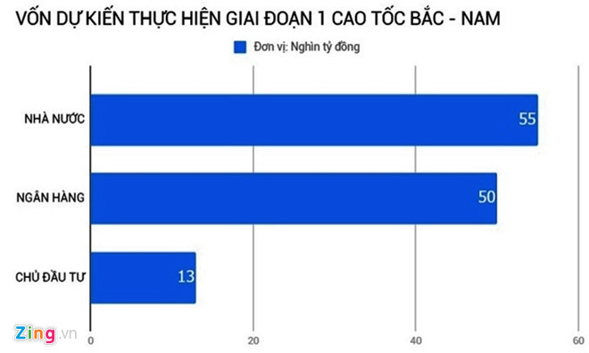
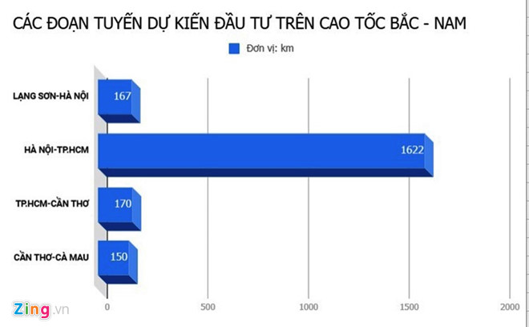

Dự án cao tốc Bắc - Nam sẽ chủ yếu thực hiện đầu tư bằng hình thức PPP. Các nhà đầu tư cho rằng nếu không minh bạch họ sẽ khó lòng tham gia dự án 15 tỷ USD này.
Dự án đầu tư xây dựng cao tốc Bắc - Nam vừa được Chính phủ trình Quốc hội xin ý kiến. Theo đó, tuyến cao tốc dài hơn 2.100 km sẽ chạy qua 32 tỉnh thành với tổng mức đầu tư khoảng hơn 310.000 tỷ đồng.
Theo Chính phủ, giai đoạn 1 của cao tốc Bắc - Nam dự kiến đầu tư hơn 650 km với tổng kinh phí hơn 118.000 tỷ đồng. Trong đó, 55.000 tỷ đồng trái phiếu chính phủ, 63.000 tỷ đồng huy động nhà đầu tư.
Trong số vốn sẽ huy động, 13.000 tỷ đồng từ vốn chủ sở hữu nhà đầu tư, còn lại được huy động các tổ chức tín dụng.
Sợ rủi ro
Là doanh nghiệp từng tham gia nhiều dự án PPP, ông Trần Văn Thế, Tổng giám đốc Tập đoàn cầu đường Sài Gòn, cho rằng cao tốc Bắc - Nam là cơ hội rất lớn cho các doanh nghiệp. Nhưng nhiều doanh nghiệp còn e ngại vì sợ rủi ro.
Vị này khẳng định khi huy động vốn xã hội hóa ở các dự án giao thông, Nhà nước phải đảm bảo chính sách pháp luật ổn định. Nhiều trường hợp khi ký hợp đồng thì theo quy định này nhưng sau đó khi vào thực hiện thì chính sách đã thay đổi.

Nhiều đoạn tuyến trên cao tốc Bắc - Nam đã đưa vào sử dụng. Ảnh: Hoàng Hà.
Ông Thế nói khi thay đổi chính sách xảy ra hai trường hợp. Trường hợp lợi cho chủ đầu tư thì cơ quan Nhà nước không thực hiện. Nhưng trong trường hợp bất lợi, cơ quan Nhà nước lại yêu cầu nhà đầu tư lên để đàm phán, giảm giá, phí.
“Việc giảm phí sẽ ảnh hưởng đến phương án tài chính của doanh nghiệp. Vì thời gian trả gốc, lãi ngân hàng không thay đổi”, ông Thế nói.
Ngoài ra, cơ quan nhà nước phải đảm bảo tính đồng nhất của pháp luật. Hiện, PPP đan xen giữa rất nhiều văn bản luật, chưa đồng nhất gây khó khăn cho các chủ đầu tư.
Cùng quan điểm, trao đổi với Zing.vn, một lãnh đạo Tổng công ty phát triển hạ tầng và đầu tư tài chính Việt Nam (Vidifi) cho rằng những lùm xùm ở các dự án BOT thời gian qua phần nào ảnh hưởng đến niềm tin của họ.
Việc thiếu nhất quán trong chính sách dẫn đến phải điều chỉnh vị trí, mức phí tại các trạm BOT. Điều này rõ ràng ảnh hưởng đến phương án tài chính của nhà đầu tư.
Bởi nguồn vốn của các nhà đầu tư chủ yếu vay ngân hàng. Doanh nghiệp vẫn phải trả tiền lãi theo đúng kỳ hạn dù có điều chỉnh hay không thời gian, giá phí qua trạm BOT.
“Rõ ràng dự án cao tốc Bắc - Nam sẽ không dễ kêu gọi các nhà đầu tư tham gia. Nếu họ có tham gia thì điều khoản hợp đồng sẽ được thắt chặt. Những vấn đề do các cơ quan nhà nước làm tổn thất phải được đền bù”, vị này nói.
Lãnh đạo Vidifi khẳng định nếu không minh bạch, nhà đầu tư không vào. Khi đó việc đầu tư các dự án giao thông sẽ quay trở lại 15 năm trước. Một mình Bộ GTVT tự nghiên cứu, tự làm.
Nhìn ở khía cạnh khác, phát biểu tại buổi tọa đàm xây dựng cao tốc Bắc - Nam nhánh Đông, chuyên gia Lê Xuân Nghĩa, Ủy viên Hội đồng Tư vấn chính sách tài chính tiền tệ quốc gia, cho rằng huy động các doanh nghiệp vào thực hiện dự án này không đơn giản.

Vốn dự kiến thực hiện giai đoạn 1 cao tốc Bắc - Nam. Ảnh: Văn Chương.
Để thực diện giai đoạn 1, ngành giao thông phải huy động được 13.000 tỷ đồng từ chủ đầu tư. Đây là số tiền khá lớn đối với các doanh nghiệp, tập đoàn trong thời điểm khó khăn.
Ông Nghĩa cho biết nếu vốn tự có của chủ đầu tư không huy động được 13.000 tỷ đồng, các ngân hàng sẽ không giải ngân 50.000 tỷ đồng.
Vấn đề quan tâm nhất là các doanh nghiệp, tập đoàn trúng thầu có đủ vốn tự có để đầu tư và tạo sự tin tưởng để ngân hàng cho vay.
Trao đổi với Zing.vn, Thứ trưởng Bộ GTVT Nguyễn Nhật cho rằng làm cao tốc Bắc - Nam, Bộ đã có đầy đủ cơ chế và những biện pháp tạo điều kiện để thu hút chủ đầu tư tham gia.
Cụ thể, để tránh chi phí đầu tư quá cao, nhà nước đã quyết định tham gia tới 39%. Toàn bộ giải phóng mặt bằng nhà nước lo, giao mặt bằng sạch cho nhà đầu tư. Thực tế, tổng mức đầu tư tăng lên chủ yếu do giải phóng mặt bằng kéo dài.
Thứ hai, tiền tư vấn, thiết kế ban đầu nhà nước đều bỏ tiền ra. Vì vậy, việc triển khai sẽ rất nhanh chóng, chi phí đầu tư sẽ không tăng lên.
Chưa đầu tư đã lo quá tải
Chuyên gia kinh tế Trần Đình Thiên cho rằng khi đưa vào sử dụng cao tốc Bắc - Nam là xương sống của nền kinh tế. Lượng xe lưu thông tuyến này tăng rất cao.
“Như lời Thứ trưởng Nhật nói cao tốc Bắc - Nam lại quá tải vào năm 2030. Sao chúng ta không làm 6-10 làn mà chỉ làm 4-6 làn xe để rồi quá tải sau 10 năm?”, ông Thiên đặt câu hỏi.

Các đoạn tuyến dự kiến thực hiện trên cao tốc Bắc - Nam. Ảnh: Văn Chương.
Lãnh đạo Vidifi cũng bày tỏ sự lo ngại với 4 làn xe, cao tốc Bắc - Nam sẽ mãn tải trong thời gian ngắn. Thực tế cho thấy, nhiều tuyến đường quan trọng của Việt Nam vừa đưa vào khai thác đã mãn tải gây lãng phí.
Mới đây, phát biểu tại Quốc hội, ông Vũ Hồng Thanh, Chủ nhiệm Ủy ban Kinh tế của Quốc hội, khẳng định nhiều ý kiến cho rằng cần phải giải phóng mặt bằng theo quy mô 8-10 làn xe để bảo đảm tầm nhìn dài hạn và hiệu quả đầu tư trong tương lai.
Về vấn đề này, Thứ trưởng Nguyễn Nhật cho rằng lý do Bộ GTVT lựa chọn 4 làn xe với bề rộng nền đường là 17-25 m là dựa trên nghiên cứu của JICA.
Tổ chức này đã nghiên cứu, phân tích tất cả các loại hình vận tải, từ đó phân bổ cho từng loại hình vận tải để tránh lãng phí.
Thứ trưởng Bộ GTVT Nguyễn Nhật. Ảnh: Văn Chương.
Trong chiến lược phát triển đường sắt Việt Nam, Chính phủ phê duyệt, đến 2030 sẽ đưa đường sắt tốc độ cao Hà Nội - Vinh vào khai thác. Trong khoảng cách dưới 300 km, đi đường sắt chắc chắn sẽ thuận tiện hơn đường bộ. Khi đó, nhu cầu đường bộ sẽ giảm xuống.
Dự kiến năm 2020, Bộ GTVT sẽ trình Chính phủ dự án đường sắt cao tốc đoạn Hà Nội - Vinh, TP.HCM - Nha Trang. Đây là lý do Bộ quyết định chỉ làm 4 làn xe.
Văn Chương